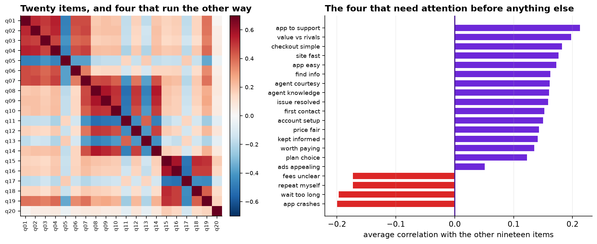
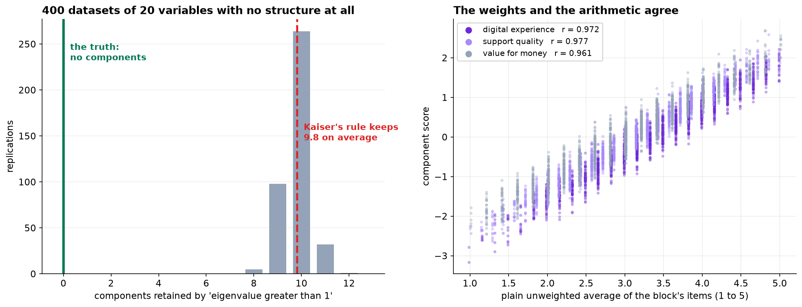

Marketing wants one satisfaction number for the dashboard. The research team thinks the battery measures three separate things. Both are testable claims, and the test is the whole chapter.
- Setting
- The customer survey from Chapter 177, fielded again. This wave carried a twenty-item agreement battery about the app, the support experience and the price. 1,628 usable responses after cleaning.
- The question
- How many distinct things does the battery measure, which items belong to which, and what should the dashboard compute every month?
- Why it matters
- Averaging twenty items into a single number hides whichever one is moving. Reporting twenty separate trend lines is not a dashboard. The right answer is somewhere in between, and it has to be recomputable by someone who will not have the notebook.
- What we do
- Clean, reverse-score, compare three rules for how many components to keep, rotate, read the loadings honestly including the items that do not fit, check reliability, and then ask whether the estimated weights beat plain arithmetic.
Applied to twenty variables with no structure at all, the eigenvalue-greater-than-one rule retains 9.8 components on average. Parallel analysis gets the right answer here, which is three. And once the three blocks are identified, the plain unweighted average of each block correlates above 0.96 with its component score and predicts both outcomes just as well.
Cleaning, and Why It Matters More Here
1,896 responses arrive. A duplicated export block takes it to 1,850. "Prefer not to say" was coded as 99 rather than left blank, which would otherwise enter every correlation as a value nineteen points above the top of the scale; removing those leaves 1,677. Then 49 straight-liners, respondents who gave the identical answer to all twenty items, leaving 1,628.
Straight-liners deserve a moment. A respondent who answered 4 to everything contributes a row of zero variance that is perfectly consistent with every other straight-liner. In an analysis whose entire input is a correlation matrix, that is not a rounding error.
Four items are negatively worded and stored as collected: agreeing with "I wait too long to reach someone" is a bad outcome on the same 1-to-5 agreement scale where agreeing with "staff treat me courteously" is a good one. They are reverse-scored, and section 5 is about what happens if they are not.

How Many Things Is This Measuring?
| Component | Eigenvalue | Share of variance | 95th percentile from noise | Keep? |
|---|---|---|---|---|
| 1 | 6.174 | 30.9% | 1.235 | yes |
| 2 | 2.559 | 12.8% | 1.189 | yes |
| 3 | 2.178 | 10.9% | 1.159 | yes |
| 4 | 0.952 | 4.8% | 1.135 | no |
| 5 | 0.659 | 3.3% | 1.112 | no |
Three rules are in common use and they disagree about how confident to be.
Kaiser, keep every eigenvalue above 1, retains three here. It also came within 0.048 of retaining a fourth. Scree, look for the elbow, is genuinely ambiguous on this sequence: 6.17, 2.56, 2.18, 0.95, 0.66. The drop from one to two is large and so is the drop from three to four, so it can be read as two or as four. Parallel analysis asks what eigenvalues this dataset would produce with no structure at all, simulates five hundred of them, and keeps only what beats the noise. It retains three and rejects the fourth by 0.183.
Twenty completely uncorrelated variables at this sample size, four hundred replications. The rule retains 9.8 components on average, and never fewer than eight.
The reason is simple. Eigenvalues of a sample correlation matrix scatter around 1 even when the population matrix is the identity, so about half of them land above it. The threshold of 1 is the average eigenvalue, not a test. Parallel analysis is the same idea done properly: compare against what noise produces at this sample size and this number of items, rather than against a constant.
Three components, accounting for 54.6 percent of the variance in the twenty items.
![Left: a scree plot with the survey's eigenvalues falling from 6.17 to below 0.7 by the fifth component, against a dashed line showing the 95th percentile of eigenvalues from pure noise which declines gently from 1.24 to about 1.0, and a dotted line at Kaiser's cutoff of 1. The first three eigenvalues are well above the noise line and the fourth, at 0.95, is below it. Right: a heatmap of rotated loadings for twenty items on three components, showing items 1 to 6 loading on digital experience, 8 to 14 on support quality, and 15 to 18 on value for money, with q07 loading 0.55 and 0.53 on two, q19 loading 0.43 and 0.62, and q20 loading on nothing.](../assets/img/capstone-pca-scree-loadings.png)
Rotation Is a Choice of Axes
The unrotated solution is mathematically optimal and unreadable. Nineteen of the twenty items load above 0.30 on the first component, because the first component of a correlation matrix with all-positive entries is always a general "how happy is this person overall" direction.
Rotation cannot change how much variance three directions capture, because the three-dimensional subspace is fixed by the data. Varimax picks the axes inside that subspace which put each item's weight mostly on one axis.
"We rotated the factors" is often heard as "we found the real ones". Nothing was found. Rotation is a choice of coordinates, not a discovery. Different criteria pick different axes, all equally valid as summaries and differently readable, and none of them is the truth about customers.
Naming the Blocks, and the Items That Do Not Fit
Three clean blocks emerge, and they have defensible names: items 1 to 6 are Digital experience, items 8 to 14 are Support quality, items 15 to 18 are Value for money. Three items need a decision instead of a name.
| Item | Loadings | What is going on | Decision |
|---|---|---|---|
| q07 "easy to reach a person from inside the app" | 0.55 digital 0.53 support | It is about the app and about support. Not a measurement failure, the item doing what it says | Out of both indices, reported on its own |
| q19 "compared with alternatives, good value" | 0.62 value 0.43 digital | Mostly value, not cleanly | Out of the index |
| q20 "I enjoy the company's advertising" | communality 0.08 | 92 percent of its variance is unrelated to anything else in the battery | Drop from the index, and from the questionnaire |
The temptation with a cross-loading item is to assign it to whichever block it loads on slightly more and report that block as a clean measure. With q07 at 0.55 and 0.53, that would be a small lie in a document a lot of people will read.
And q20 is not measuring a fourth thing. It is measuring nothing this battery is about. Cutting an item because it does not fit is a decision that should be made openly and written down, because it is also how a battery gets quietly tuned until it says what somebody wanted.
What Forgetting to Reverse-Score Actually Costs
Run the whole component analysis on the raw responses, without reverse-scoring, and compare.
Identical, and necessarily so. Reversing an item multiplies that column by minus one, which flips the sign of its correlations with everything and leaves the eigenvalues of the correlation matrix untouched.
That is exactly what makes the mistake dangerous. It does not announce itself. The scree plot looks fine, parallel analysis gives the same answer, and the rotated solution still has three blocks. The only visible symptom is four items carrying negative loadings, which is easy to read past on a twenty-row table.
| Block | Alpha, reverse-scored | Alpha, raw | Index correlation with overall satisfaction |
|---|---|---|---|
| Digital experience | 0.839 | 0.555 | +0.545 vs +0.488 |
| Support quality | 0.866 | 0.246 | +0.587 vs +0.470 |
| Value for money | 0.828 | 0.400 | +0.532 vs +0.489 |
Inside an index, an unreversed negatively worded item points the opposite way to its neighbors and cancels them out. So the guidance is not "remember to reverse-score", which everybody already knows. It is: compute alpha before you ship an index, because alpha catches this and the component analysis does not.
All twenty items treated as a single scale give an alpha of 0.877, higher than two of the three blocks, on a battery we have just shown measures three distinguishable things. Alpha rises with the number of items almost regardless of structure. It answers "do these hang together enough to average", not "are these one thing".
Do the Weights Earn Their Keep?
The dashboard needs something it can recompute every month in the reporting tool. Two candidates: the component scores, which need the loadings and each item's mean and standard deviation, or the plain unweighted average of the items in each block.
The weights the analysis worked to estimate produce almost the same ranking of respondents as adding the items up and dividing. That is not specific to this dataset: when items are positively correlated and their loadings are of similar size, almost any reasonable set of weights gives nearly the same composite. The result has a long history in decision research under the heading unit weights.
The question that settles it is whether either version predicts anything better. Five-fold cross-validation against the two separate outcomes the survey also collected.
| Predictors | Overall satisfaction, R² | Would recommend, AUC |
|---|---|---|
| Three component scores | 0.5696 | 0.7609 |
| Three unweighted averages | 0.5610 | 0.7605 |
| All twenty items separately | 0.5656 | 0.7552 |
Within 0.009 on R-squared and 0.006 on AUC. Notice the third row too: keeping all twenty items and letting a model weight them freely does not beat three averages.
Ship the averages. Anyone can recompute them, they survive an item being added or dropped, they need no re-estimation next quarter, and they cost nothing in predictive power. A component score that a data scientist has to regenerate monthly is a worse product than a column of arithmetic.
The analysis was still necessary. It is what established that there are three blocks and not one, which items belong to which, that q20 measures nothing relevant, and that two items belong to two blocks at once. None of that was visible beforehand, and the single dashboard number marketing asked for would have hidden exactly the movement they wanted to see.
The dimension reduction was worth doing. It was not worth deploying.

Two Things This Does Not Settle
Principal components are not factors, and the difference matters when the goal changes. A component is a weighted sum of the observed items, chosen to capture variance. A factor model runs the other way: it treats each item as a noisy indicator of an unobserved construct plus item-specific error, and estimates the construct. For building indices, which is the job here, PCA is the right tool and the two give near-identical answers when communalities are high. For a claim like "trust drives retention", where trust is a latent thing the items only indicate, the factor model is the object that means what you want it to mean.
Pearson correlations on five-point items understate the association. Everything here treats a Likert response as a number, which is standard and slightly wrong: the responses are ordered categories, and discretising an underlying continuum attenuates correlations, more so as the items get more skewed. Polychoric correlations estimate the correlation of the latent continuous variables behind the categories and would give slightly larger loadings. With five points and mild skew this rarely changes which items group together, which is why the shortcut is usually taken. With three-point items or heavy floor effects, it can.
What to Watch
- ✓Do not use the eigenvalue-greater-than-one rule. It retains about ten components from twenty variables with no structure. Use parallel analysis, which compares against noise at your sample size.
- ✓Rotation is a change of coordinates. It cannot change the variance explained, and it does not find anything. Say so before somebody quotes it as a discovery.
- ✓Report the items that do not fit. A cross-loading item belongs to two blocks and an item with a communality of 0.08 belongs to none, and forcing either one is how a battery gets tuned into saying what was wanted.
- ✓Compute alpha before shipping an index. It is what catches an unreversed negatively worded item, and the component analysis is not.
- ✓A high alpha is not evidence of one construct. It rises with the number of items regardless of structure.
- ✓Test the estimated weights against plain averaging before committing to a pipeline that has to be re-run by a specialist every month.
- ✓A dashboard number is a product, not an output. Recomputability by the person who will actually maintain it is a real design constraint and usually beats a fraction of a point of accuracy.
Dimension Reduction in Data Science & AI
| Where it appears | The same question, in a different costume |
|---|---|
| Psychometrics and measurement | The original home of all of this: how many traits, which items load on which, and is the scale reliable |
| Feature preprocessing | PCA before a model to decorrelate and compress, where interpretability does not matter and the number of components is chosen by cross-validation instead |
| Embeddings and representation learning | The modern descendant: learned low-dimensional representations, with the same problem that individual axes are not meaningful unless you make them so |
| Genomics and imaging | Thousands of correlated measurements reduced to a handful of directions, where the noise-versus-signal question is exactly parallel analysis |
| Composite indices in policy | Development indices, deprivation indices, risk scores: almost all of them are unit-weighted sums, and this chapter is why that is defensible |
Horn proposed parallel analysis in 1965 and it has outperformed the alternatives in essentially every simulation study since; Zwick and Velicer's 1986 comparison is the one usually cited. Kaiser's rule dates from 1960 and Kaiser himself later described it as having been overused. Kaiser's varimax criterion, from 1958, remains the default orthogonal rotation. Cronbach's 1951 paper introducing alpha is among the most cited in the social sciences, and Sijtsma's 2009 rebuttal, on what alpha does and does not measure, is the necessary companion to it. On unit weights, Wainer in 1976 and Dawes in 1979 established that equal weights match or beat estimated ones across a wide range of prediction problems, which is the result section 6 reproduces.
The full project, step by step
The companion notebook cleans the export, reverse-scores the four negatively worded items, compares the three retention rules including Kaiser's rule applied to pure noise, implements varimax from scratch, prints the loading table with communalities, computes alpha with and without reverse-scoring, and cross-validates the component scores against plain averages against all twenty items.
The dataset
(capstone-pca-survey-battery.xlsx) holds 1,896 responses with the full twenty-item battery, the
questionnaire and item wordings, a duplicated export block, straight-liners, and "prefer not to say" coded as
99. Two written reports accompany it: a plain-language brief for the insight team, and a
technical report covering retention, rotation, reliability and the unit-weight
comparison.
🎓 Key Takeaways
- ✓Kaiser's rule retains 9.8 components from twenty variables with no structure. The cutoff of 1 is the average eigenvalue, not a test.
- ✓Rotation does not change the fit and does not find anything. Same 54.6 percent, different axes, only one of them readable.
- ✓Three items did not belong. Two cross-load and one has a communality of 0.08; saying so is part of the job.
- ✓Reverse-scoring leaves the eigenvalues untouched and takes the support block's alpha from 0.866 to 0.246. Alpha is the diagnostic that catches it.
- ✓Plain averages match the component scores above r = 0.96 and predict as well. Do the analysis; ship the arithmetic.